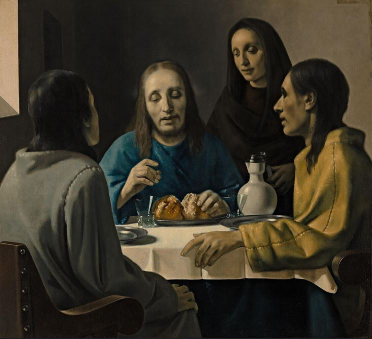
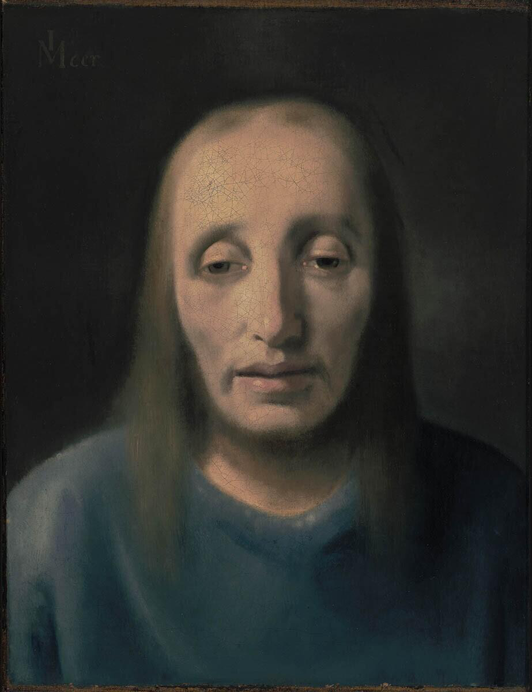

THE ART OF
DECEPTION
The story of Han van Meegeren

In 1937, a painting fooled the world's leading art experts. Could you do the same?
The Art of Deception
THE STORY OF HAN VAN MEEGEREN
Han van Meegeren was a Dutch painter who felt that art experts never recognised his talent.
He wanted to prove them wrong, so he started making fake paintings in the style of Johannes Vermeer.
By ageing canvases and experimenting with paint, he managed to fool some of the greatest art experts of his time.
NOW IT'S YOUR TURN
You're stepping into the forger's workshop. Age your canvas, mix the right pigments, and recreate a convincing painting.
Once you're finished, three judges will decide whether your forgery is believable.
Can you fool the experts?
Prepare the Forgery
A convincing forgery needs to look centuries old. Time the ageing process carefully.
AGE THE CANVAS
Stop the marker inside the target area. The closer to the centre, the better your forgery.
CANVAS AGEING
Prepare the Paint
A convincing forgery requires more than talent. Mix your pigments to create the perfect antique shade.
MIX THE PIGMENTS
Adjust the pigment mixture to match the secret colour of the master forger.
MASTER'S PIGMENT
YOUR MIXTURE
PIGMENT MIXING
Can You Fool Vermeer?
Recreate the painting as accurately as possible.
Reference

Your Painting
THE FORGER'S TRIAL · 1945
THE COURT IS NOW IN SESSION
Three experts will decide the fate of your forgery.
THE EVIDENCE
THE HISTORIAN
Awaiting verdict...
THE ART CRITIC
Awaiting verdict...
THE COLLECTOR
Awaiting verdict...